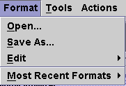

Format Menu
The Format menu provides functions related to opening, editing, and saving formats. This menu allows you to change the context information of the selected graph in the Waveform Graphs Tool (WGT), which includes background color, font color, and font size.

The following menu items are included:
Open... - is used to open an existing format to apply to a new graph.
Save As... - allows you to save the current context information of the selected graph in the WGT.
Edit - allows you to change the context information of the selected graph in the WGT.
Most Recent Formats - lists the last four formats loaded into the Signal Analyzer. The path to the format is also displayed.